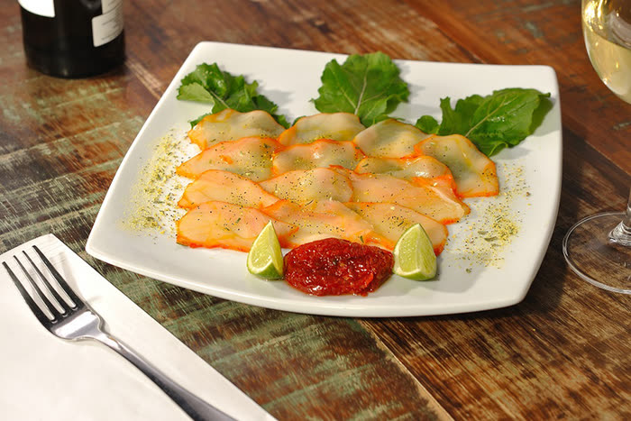
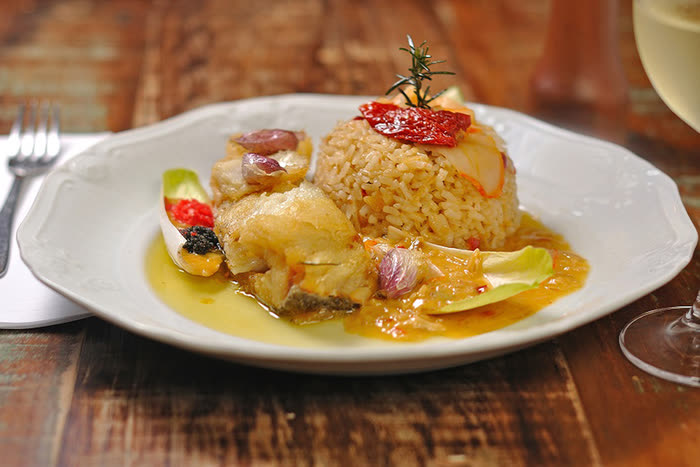
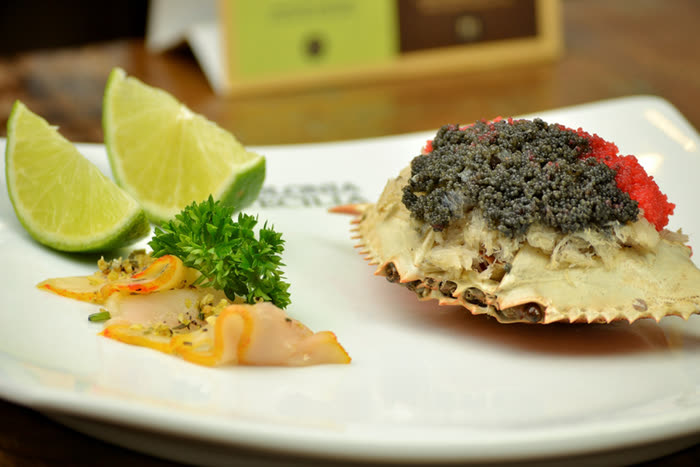

Mercado Municipal
Curitiba/PR
Telefone: (41) 3336-0049
Reservar no Mercado MunicipalTradição e simpatia são ingredientes primordiais de nossa casa.
Desde 1991 · Curitiba, Paraná
Fundado em 1991 por Ilsa Artusi Agottani, o Anarco nasceu da herança de uma família de imigrantes italianos que trouxe consigo o amor pela cozinha tradicional. Ilsa cresceu na Colônia Cecília, no coração do Paraná, onde aprendeu com as mãos e com o coração os segredos da massa feita em casa.
O mais tradicional restaurante de comida italiana da cidade de Curitiba carrega em cada prato a memória de uma cozinha que não se apressa — que respeita o tempo do molho, o ponto da massa e a qualidade do ingrediente. Venha experimentar as delícias da Anarco e fazer parte desta linda história de amor pela cozinha italiana.
Pratos que contam a história de quem os faz.



Escolha onde quer nos visitar e reserve diretamente.
Telefone: (41) 3336-0049
Reservar no Mercado MunicipalTelefone: (41) 3013-5379
Reservar no Batel